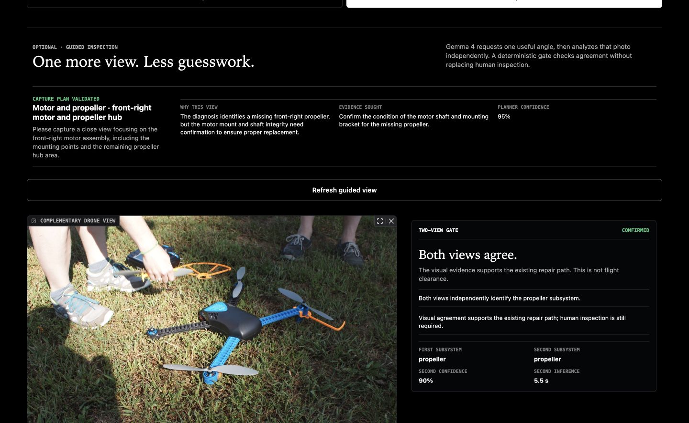
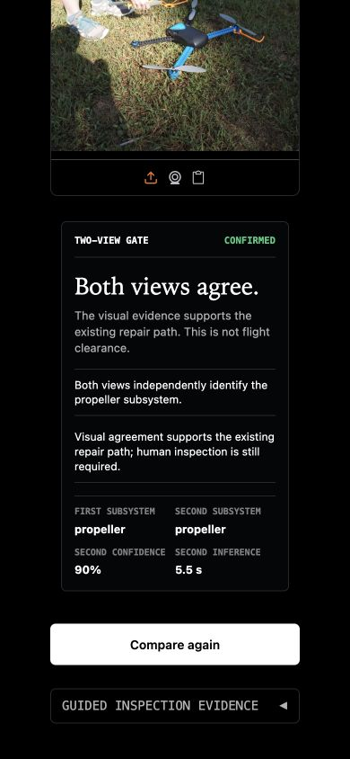

Any drone photo
Gallery, camera, drag and drop, or clipboard. The app does not fetch an external URL.
Offline drone diagnostics for field teams. A photo becomes a strict, validated repair path on the machine, or the system refuses.

The operator stays inside one continuous workflow. Gemma 4 handles visual perception; Pydantic and deterministic code enforce the boundaries around that output.
Gallery, camera, drag and drop, or clipboard. The app does not fetch an external URL.
The model runs through a local runtime and describes only visible damage.
Pydantic accepts the JSON contract or SparePart rejects the result after one retry.
Numbered guidance remains a proposal. Mechanical inspection stays with the operator.
Frozen evaluation on 14 photos with real visible damage. The comparison baseline ignores the image and always predicts “propeller.”
71% subsystem identification.
43% when always predicting propeller.
Measured per photo on the local machine.
Every evaluated output passed Pydantic.
Visible propeller, arm, frame, and gear damage.
Battery and gimbal damage were missed in this dataset.
Left/right localization is not presented as reliable.
A visual diagnosis never authorizes return to flight.
After the first diagnosis, Gemma 4 can request one complementary angle through a constrained InspectionRequest. A second diagnosis runs independently, then deterministic code checks subsystem, damage family, confidence, uncertainty, and drone presence.
QA disclosure: the same public drone image was reused for the recorded second pass to validate the mechanics of the pipeline. This is not claimed as independent multi-angle corroboration.

This page is a static, shareable case study. The executable Gradio application, model calls, evaluation scripts, dataset notes, and refusal logic are available in the repository.